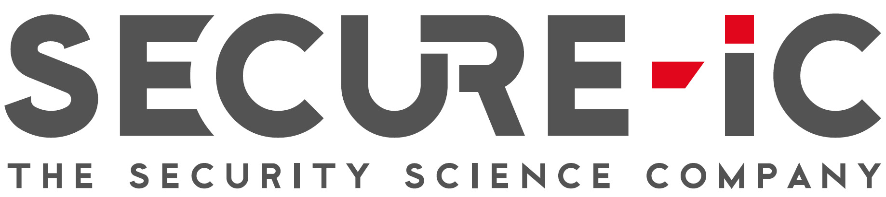
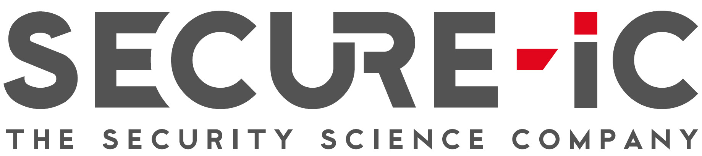
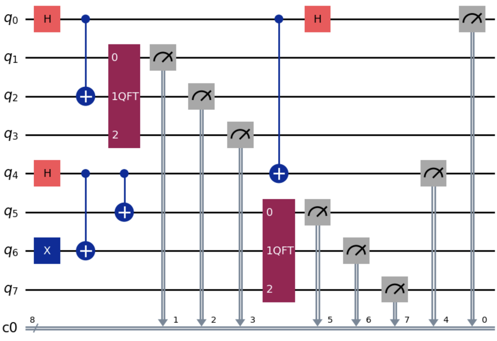
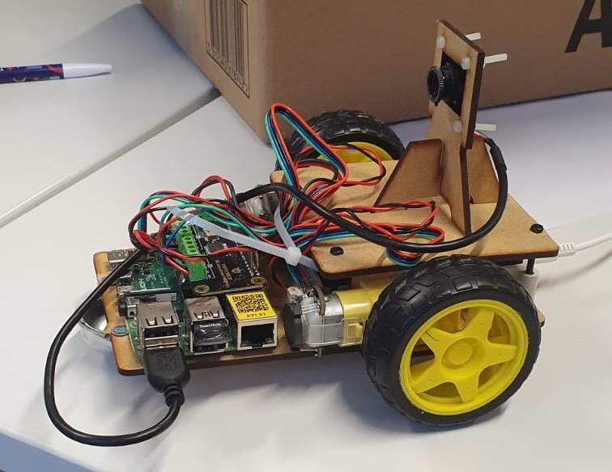

Stage chez Secure IC
Eté 2025
Implémentation de divers modèles d'IDS sur bus CAN. Ils étaient basés sur des modèles d'IA (LSTM, autoencodeur, BERT, CNN, adversarial networks). L'IDS a ensuite été implémenté sur un AGV d'Alstef.
Eté 2025
Implémentation de divers modèles d'IDS sur bus CAN. Ils étaient basés sur des modèles d'IA (LSTM, autoencodeur, BERT, CNN, adversarial networks). L'IDS a ensuite été implémenté sur un AGV d'Alstef.
Fin 2025
Implémentation d'un algorithme d'inpainting basé sur la copie de patchs. Ci-dessous un exemple d'application où on supprime un cheval d'une image.
Milieu 2025
Projet de fin de première année associé avec un chercheur en informatique quantique. Nous avons implémenté des algorithmes à l'état de l'art pour vérifier qu'ils sont corrects et surtout qu'ils peuvent être intéressants malgré le bruit d'une machine réel. Nous nous sommes pour cela connecté à une machine IBM Quantum via leur API. Ci-dessous un circuit quantique réalisé sur machine réelle grâce à la libraire Qiskit.
Fin 2024 - Début 2025
Projet de début de première année en groupe de 5. Nous avons conçu une voiture autonome à partir d'une raspberry Pi et d'une caméra. Après avoir conçu le design en vectoriel, nous avons implémenté une stratégie autonome puis par groupe pour capturer des balises sur une grille. Notre groupe a signé la meilleure performance de la promotion.
Fin 2024
Projet de début de première année en groupe de 4. Nous avons implémenté un compilateur de C vers du code assembleur x86-64. Des librairies OCaml sont utilisées pour lexer et parser le code à compilateur et créer un fichier json. Un fichier python interprète ensuite ce fichier json pour écrire un fichier assembleur qui a le comportement voulu par le code initial. Les pointeurs, les variables locales et globales, les opérations arithmétiques, les tableaux, les fonctions, les printf/scanf, les if/else, les boucles while et les malloc sont supportés.

2023 - 2024
Projet de prépa (MPI*) à présenter à l'oral lors des concours. Le sujet portait sur l'application de l'algorithme génétique NEAT à la conduite autonome. Chaque réseau de neurones recevait en entrée la distance aux murs selon 5 directions et devait donner un ordre de direction et d'accélération à la voiture. Le code, en Python, permettait de converger vers des voitures réussissant à parcourir un circuit complexe (comme ci-dessous).
2024
Implémentation d'une application de trading en Python. Le code permettait de lire des données de marché et d'y ajouter des indicateurs techniques. Je comptais y ajouter des stratégies de trading backtestées basées sur ces indicateurs, mais ma motivation s'est éteinte avec ma perte de foi en cette méthode. Le code semble déprécié mais est toujours disponible ci-dessous.